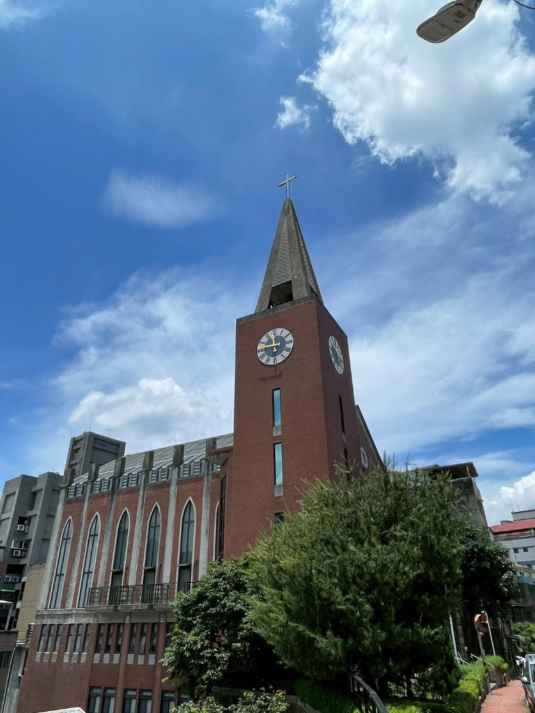
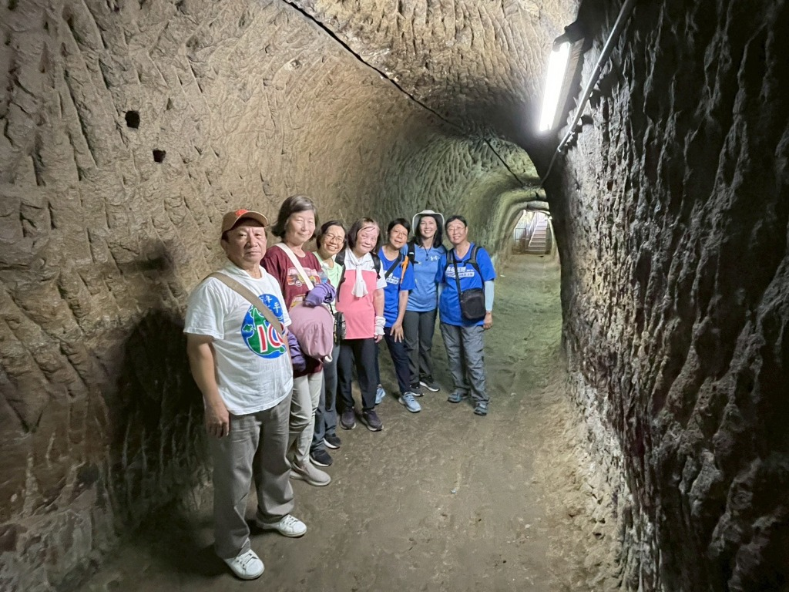

文／玉玲
我跟我家人都不是在地的新店人，所以剛看到這堂課時，是懷著好奇想要了解新店故事的心態。
在第一堂課看到淑華老師投影片中，馬偕牧師當時蓋哥德式禮拜堂照片時，就覺得教堂怎麼可以蓋得這麼漂亮，並且惋惜洪水把教堂與河岸邊的民宅都沖毀。

跟上淑華老師的腳步穿過巷弄都是驚喜，之前都不知道北宜路上的巷弄裡有這麼多的歷史遺跡跟故事。新店原來有三大煤礦「和美煤礦」「明治煤礦」「振山煤礦」。和美煤礦就在碧潭風景區附近，跟著老師的腳步去探索，知道了舊時捲揚機的位置，斜坡的地形就是煤炭台車可以被拉出坑口的設計。新店路上的長長斜坡路，大家稱為摩天嶺。新店國小旁的房子，我一直以為只有一、二樓，原來還有地下六樓，而且房子的面積其實很大。我一直都以為是一個小小的店面，而且以前這裡竟然有紅燈戶。新店國小的校區，原來附近都是教職員宿舍，舊時的校門口竟然是在國校路裡。
讓我印象最深刻的是開天宮的石硿，石硿內的開鑿堪稱鬼斧神工，讓人嘆為觀止。

上了這幾堂課，讓我對國校里的歷史故事更加了解，新店真的是一個歷史寶藏。